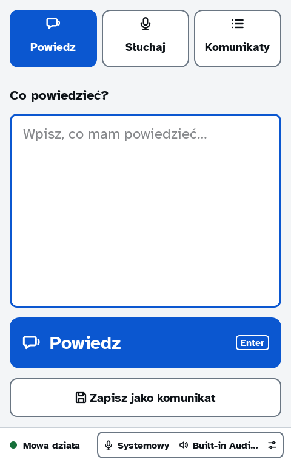
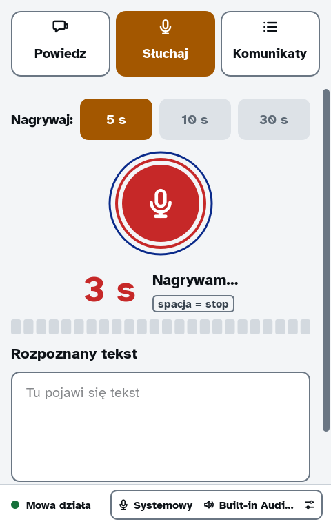
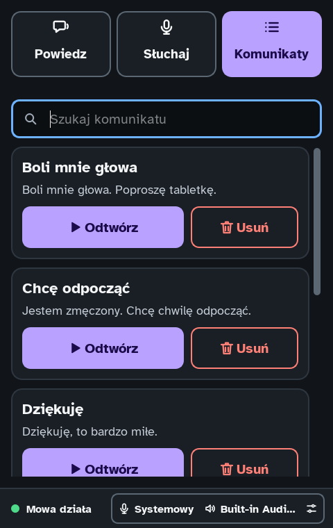

komunikator
Mowa w wierszu poleceń i na pulpicie: powiedz, zapisz, odsłuchaj, przepisz.
02
Problem → rozwiązanie
Problem
W domu z asystentem głosowym potrzebny był jeden głos dla skryptów, timerów i ludzi — działający także wtedy, gdy sieć albo usługa w chmurze nie działa.
Rozwiązanie
Mały silnik w C++17 bez zależności, który sam rozmawia protokołem Wyoming z Piper (tekst → mowa) i faster-whisper (mowa → tekst), plus spokojne okno Qt. Zapisane komunikaty grają nawet przy wyłączonym serwerze mowy.
03
Zrzuty ekranu



04
Trzy decyzje inżynierskie
- 1Zero zależności w rdzeniuSilnik potrzebuje tylko kompilatora C++17: własny JSON, WAV i klient Wyoming. Mniej rzeczy, które mogą się zepsuć przy aktualizacji systemu.
- 2Jedno polecenie dla wszystkichWyniki na stdout, diagnostyka na stderr, opisane kody wyjścia. Skrypt, cron i człowiek przy klawiaturze używają tego samego interfejsu.
- 3Nigdy surowy błądUżytkownik widzi jedno zwykłe zdanie: co się stało i co zrobić. Szczegóły techniczne trafiają do logu.
05
Jakość
Tylko to, co da się sprawdzić.06
Jak pracowałem z AI
Ja
- Wymagania
- Architektura
- Przegląd kodu
- Testy
AI
- Pisanie kodu
C++ nie znam. Kod pisze Claude według zasady „żadnych dróg na skróty”, a ja wyznaczam cele, podejmuję decyzje i testuję na prawdziwym sprzęcie w domu. Commity zrobione z AI mają podpis Co-Authored-By.
07
Stan i co dalej
W rozwoju · sprawdzian trwa
- Podział dwóch największych plików na moduły
- Automatyczne testy na GitHub Actions
- Praca w tle z kolejką mówienia
Inne projekty